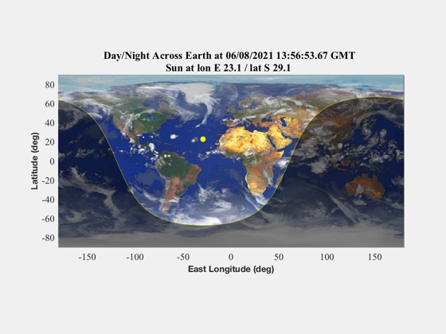

Animate the terminator line through a year
Since version 8.
------------------------------------------------------------------------
See also Map, Date2JD, JD2DN, JDToDateString, TerminatorLine
------------------------------------------------------------------------
makeMovie = 0;
movieName = 'TerminatorLineMovie';
shade = 1;
Map('Earth','2D')
hold on
jD = Date2JD;
day0 = JD2DN(jD);
n = 100;
lat = zeros(365,n);
sun = zeros(2,365);
for i=1:365,
[lat(i,:),long,sun(:,i)] = TerminatorLine( jD+i, n );
end
day = day0 + (1:365);
day(day>365) = day(day>365)-365;
ylim = 90;
if( day0>81 && day0<264 )
ylim = -90;
end
t = line(long,lat(1,:),'color','y');
s = line(sun(2,1),sun(1,1),'color','y','marker','.','markersize',20);
if( shade )
p = patch([-180 long 180],[ylim lat(1,:) ylim],'k');
set(p,'facealpha',.5,'linestyle','none')
end
k = 0;
for i=1:2:365
lat0 = sun(2,i);
lon0 = sun(1,i);
if( lon0<0 )
eastWest = 'W';
else
eastWest = 'E';
end
if( lat0<0 )
northSouth = 'S';
else
northSouth = 'N';
end
if( shade )
if( day(i)>81 && day(i)<264 )
ylim = -90;
else
ylim = 90;
end
set(p,'ydata',[ylim lat(i,:) ylim])
end
set(t,'ydata',lat(i,:))
set(s,'xdata',sun(2,i),'ydata',sun(1,i))
title(sprintf('Day/Night Across Earth at %s GMT \nSun at lon %s %2.1f / lat %s %2.1f ',...
JDToDateString(jD+i),eastWest,abs(lon0),northSouth,abs(lat0)))
drawnow
if( makeMovie )
k=k+1;
m(k) = getframe(gcf);
end
end
if( makeMovie )
SaveMovie(m,movieName)
end
